Todo ser vivo tende a se manterem em homeostase, que é a capacidade que o organismo tem de manter o meio interno em estado de equilíbrio dinâmico. Ela é essencial para vida e um dos sistemas que é responsável por essa manutenção é o excretor. Sabendo dessa necessidade de excreção, vou falar um pouco sobre outros filos do Reino Animal, separados por dois grupos: os vertebrados e invertebrados.
Invertebrados
Poríferos
Esponjas; fazem parte de um grupo que não possuem sistema excretor; a excreção sai da célula por difusão em direção à esponjocele, depois sai por uma cavidade chamada ósculo.
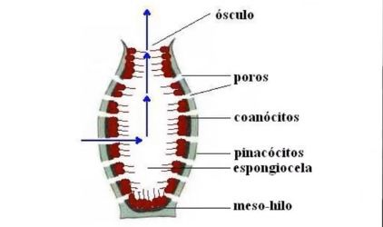Cnidários
Águas-vivas; sem sistema excretor; excreção sai por difusão através das paredes do corpo, porém sendo captada pela cavidade gastrovascular e dessa saindo pela boca que é circundada por alguns tentáculos.
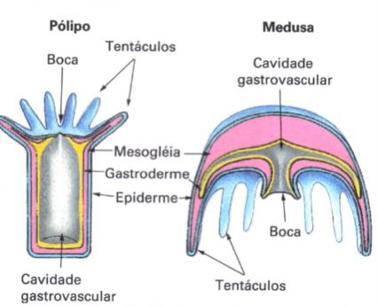Platelmintos
Tênias e planarias; remoção das excretas por um órgão chamado de Protonefrídeo; basicamente é um sistema de túbulos interconectados em duas redes tubulares laterais coletoras de excrementos; CO2 e amônia por difusão (maior parte).
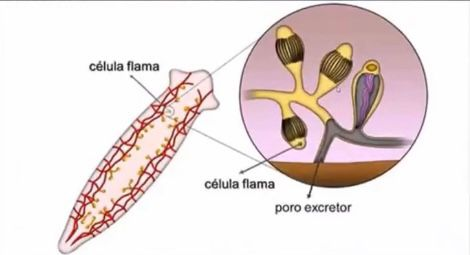Nematóides
Lombrigas; excretas podem ser eliminadas pela superfície do corpo (difusão) ou por meio de canais coletores contendo células especializadas denominadas renete.
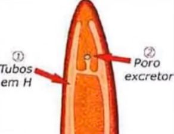Moluscos
Lucas, caracóis; excreção por metanefrídeos. Cada uma dessas unidades constitui um duto com duas aberturas, uma delas em um funil ciliado para filtrar justamente o líquido ciliado e a outra por onde os excrementos são eliminados.
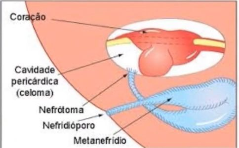Anelídeos
Minhocas; excreção também por metanefrídeos, tendo um par em cada segmento do corpo, com extremidades abertas: uma voltada pro interior e a outra pro exterior do organismo, comunicando a cavidade celomática com o meio ambiente; liberam água, amônia e CO2.
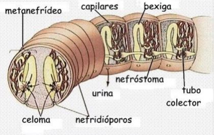Artrópodes
Excreção realizada por subdivisões dentro do próprio grupo: a maioria dos insetos e as miriápodas usam dos túbulos de Malpighi para captação dos resíduos metabólicos; nos aracnídeos, além dos túbulos existe as glândulas coxais; nos crustáceos, a função das glândulas coxais são desempenhadas por um complexo chamado de glândulas verdes; normalmente os artrópodes liberam ácido úrico.
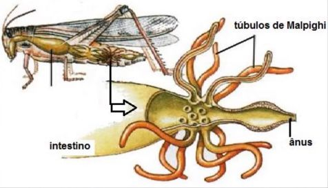 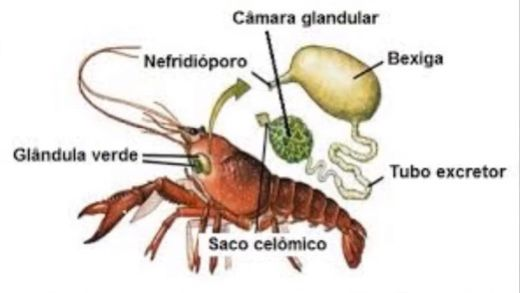 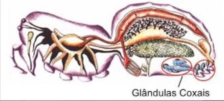Equinodermos
Estrelas-do-mar; aparelho excretor ausente; excretas difundidas pela água circulante do sistema hidrovascular.
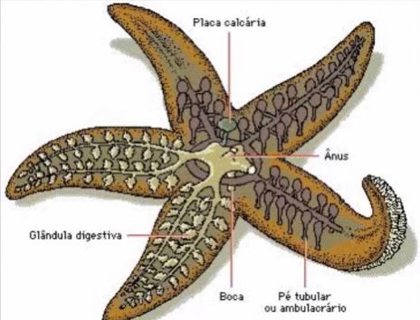Vertebrados
Amoniotélicos
Peixes ósseos e larvas de anfíbios; eliminam resíduos nitrogenados na forma de amônia, que pode ser altamente tóxica e solúvel; é uma excreção que faz uso de muita água, então é comum em ambientes aquáticos; vantagem: pequeno gasto energético na conversão do grupo amina.
Ureotélicos
Peixes cartilaginosos, mamíferos, répteis aquáticos, anfíbios adultos; excretam ureia; adaptação ao meio terrestre por sua excreta ser menos tóxica que a amônia e não tão insolúvel quanto o ácido úrico; esse grupo tem um médio gasto energético no processo; economizam água por necessidade de diluição da ureia ser menor que a da amônia.
Uricotélicos
Aves, répteis terrestres e alguns insetos; excretam ácido úrico como resido nitrogenado; mesmo precisando de pouca água para diluição da excreta, tem o maior gasto energético para ser produzido, justamente pela vida em ambientes escassos de líquido e a permanência de embriões no interior de ovos adaptados para o seu desenvolvimento; fato: esse grupo é que se encaixa na questão da baixa toxicidade ser adaptada aos ovíparos e na acumulação por mais tempo da excreta no organismo, sem ser tão prejudicial como nos outros grupos citados.
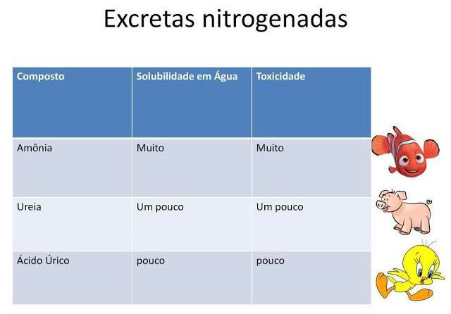